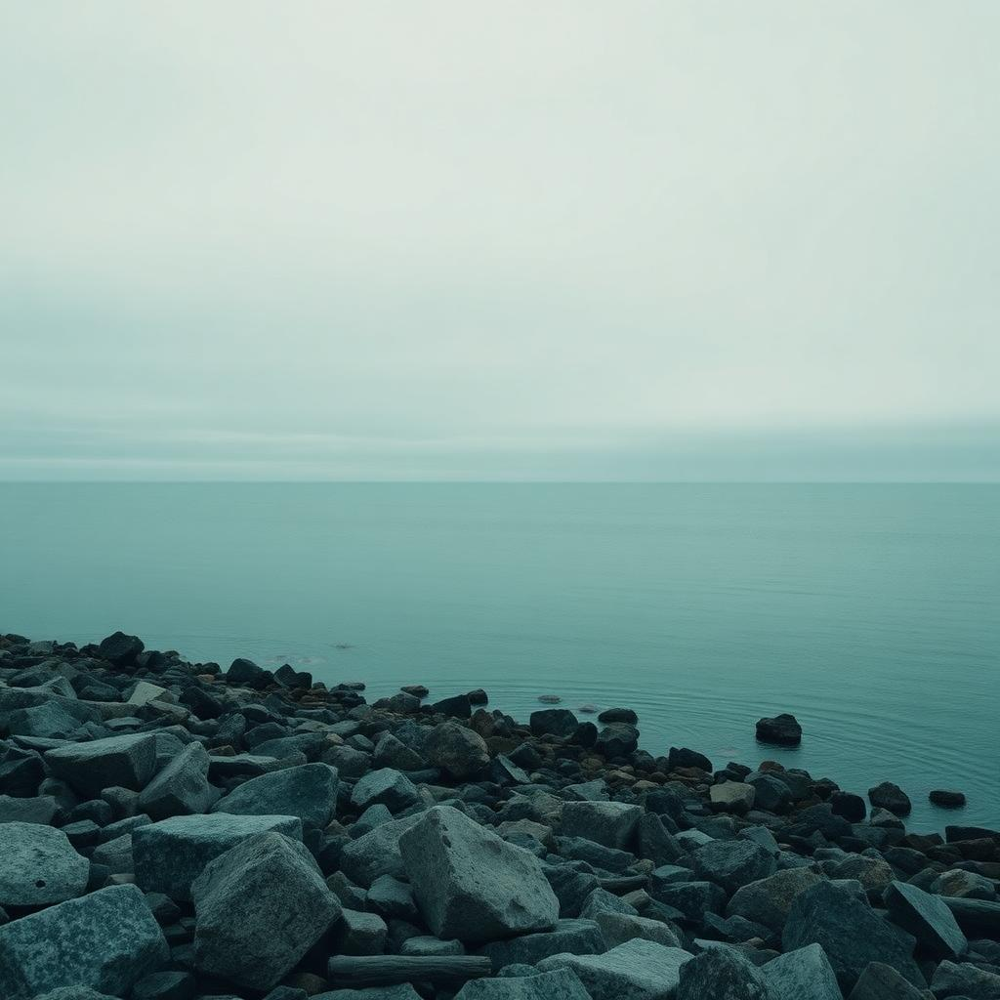

We improve what already works.
We modernise what doesn't — and build a site that feels current, professional and easy to maintain.
Most sites don't need to be thrown out. They need a stronger frame around the good parts.
So we start by looking closely at what you already have — the copy, the photos, the branding, the pages that quietly do their job. Then we build on that.
It's faster, it's calmer, and the finished site still feels unmistakably like you.
Practical over precious.
Review before we redesign
We start with your current site. What works, what's dated, what's costing you customers — a short honest read before anyone touches a pixel.
Reuse what's good
Your copy, photos, logo, colours, the little details customers already know — we keep the parts that earn their place and build around them.
Modernise the frame
Cleaner structure. Better hierarchy. A site that reads well on a phone. The story stays the same; the presentation catches up.
Keep your identity
We're not here to reinvent your business. Your brand, your tone, the way regulars recognise you — that all stays intact.
Danish, English, or both
If you already run in two languages, we preserve it. If you'd like to add one, we set it up so it's easy to keep up to date.
Easy to maintain
No sprawling CMS, no plugin jungle. When it's handed over, small updates stay small.

Only when there's a real reason.
Sometimes a full rebuild is the right call — if the current site is broken beyond repair, locked into a platform you can't leave, or the business has genuinely changed direction. In every other case, building on what's there is faster, cheaper and truer to you.
- Reuse first
- Rebuild only when it helps
- No unnecessary complexity

A stronger frame around the business you've already built.
We improve what already works, modernise what doesn't, and hand you a site that feels current, professional and easy to maintain.